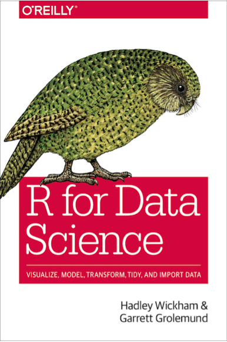

Bundle your functions
Once you’ve written more than one function, you may want to bundle them. There are two general ways to do this:
–
.pull-left[ .center[.Large[source?]]]
.pull-right[ .center[.Large[Write a package]]]
–

If you’d like to follow along, pleae make sure you have the following packages installed
install.packages(c("tidyverse", "esvis",
"devtools", "roxygen2",
"usethis"))class: inverse background-image: url(img/fams.png) #.right[the fam]
You should consider writing a function whenever you’ve copied and pasted a block of code more than twice (i.e. you now have three copies of the same code).
.right[r4ds]

Once you’ve written more than one function, you may want to bundle them. There are two general ways to do this:
–
.pull-left[ .center[.Large[source?]]]
.pull-right[ .center[.Large[Write a package]]]
–
.Large[Bundling functions into a package is not that hard!]

Standardized mean differences
–
–
–
d <- d %>%
gather(group, value, -var)
d## # A tibble: 4,000 x 3
## var group value
## <chr> <chr> <dbl>
## 1 common low 10.8
## 2 common low 10.7
## 3 common low 9.47
## 4 common low 10.1
## 5 common low 10.7
## 6 common low 9.25
## 7 common low 10.8
## 8 common low 10.8
## 9 common low 9.82
## 10 common low 9.74
## # ... with 3,990 more rows\[ d\_{[i]} = \frac{\bar{X}\_{foc\_{[i]}} - \bar{X}\_{ref\_{[i]}}} {\sqrt{\frac{(n\_{foc} - 1)Var\_{foc} + (n\_{ref} - 1)Var\_{ref}} {n\_{foc} + n\_{ref} - 2}}} \]
| ### visualize it! |
|---|
| # Back to the simultated example |
r common <- filter(d, var == "common") diff <- filter(d, var == "diff") |
r library(esvis) qtile_es(value ~ group, common) |
## ref_group foc_group low_qtile high_qtile midpoint es se ## 1 high low 0.00 0.33 0.165 -2.140207 0.09777340 ## 2 high low 0.33 0.66 0.495 -2.131032 0.09747298 ## 3 high low 0.66 0.99 0.825 -2.052756 0.09619191 |
r qtile_es(value ~ group, diff) |
## ref_group foc_group low_qtile high_qtile midpoint es se ## 1 high low 0.00 0.33 0.165 -0.4696392 0.07903561 ## 2 high low 0.33 0.66 0.495 -1.1956026 0.08451943 ## 3 high low 0.66 0.99 0.825 -1.8267267 0.09267461 |
.pull-left[ ### Common Variance
binned_plot(value ~ group, common) ]
]
.pull-right[ ### Different Variance
binned_plot(value ~ group, diff) ]
]
class: inverse middle center # taking a step back
We surely won’t get through all the steps tonight. In my mind, the best resources are:
.pull-left[
### Advanced R
 ]
]
.pull-right[
### R Packages
 ]
]
–
.footnote[For a really quick but really good intro, see Hilary Parker’s blog post]
| ### Want to give it a go? |
|---|
| # The approach I took… |
| ```r describe <- function(x) { n <- as.integer(length(na.omit(x))) nmiss <- as.integer(sum(is.na(x))) mn <- mean(x, na.rm = TRUE) stdev <- sd(x, na.rm = TRUE) |
| out <- tibble::tibble(n_valid = n, n_missing = nmiss, mean = mn, sd = stdev) out } ``` |
describe <- function(x) {
{{n <- as.integer(length(na.omit(x)))}} # Count number of valid cases
nmiss <- as.integer(sum(is.na(x)))
mn <- mean(x, na.rm = TRUE)
stdev <- sd(x, na.rm = TRUE)
out <- tibble::tibble(n_valid = n,
n_missing = nmiss,
mean = mn,
sd = stdev)
out
}describe <- function(x) {
n <- as.integer(length(na.omit(x)))
nmiss <- as.integer(sum(is.na(x)))
{{mn <- mean(x, na.rm = TRUE)}} # Calculate mean
stdev <- sd(x, na.rm = TRUE)
out <- tibble::tibble(n_valid = n,
n_missing = nmiss,
mean = mn,
sd = stdev)
out
}describe <- function(x) {
n <- as.integer(length(na.omit(x)))
nmiss <- as.integer(sum(is.na(x)))
mn <- mean(x, na.rm = TRUE)
stdev <- sd(x, na.rm = TRUE)
{{out <- tibble::tibble(n_valid = n, # Bundle it all
n_missing = nmiss,
mean = mn,
sd = stdev)}}
out
}describe(rnorm(100))## # A tibble: 1 x 4
## n_valid n_missing mean sd
## <int> <int> <dbl> <dbl>
## 1 100 0 -0.0214 1.14describe(c(rnorm(1000, 10, 4), rep(NA, 27)))## # A tibble: 1 x 4
## n_valid n_missing mean sd
## <int> <int> <dbl> <dbl>
## 1 1000 27 10.0 3.92Typical arguments
* @param: Describe the formal arguments. State argument name and the describe it.
#' @param x Vector to describe
@return: What does the function return
#' @return A tibble with descriptive data
@example or more commonly @examples: Provide examples of the use of your function.@export: Export your functionIf you don’t include @export, your function will be internal, meaning others can’t access it easily.
DESCRIPTIONMetadata about the package. Default fields for our package are
Package: practice
Version: 0.0.0.9000
Title: What the Package Does (One Line, Title Case)
Description: What the package does (one paragraph).
Authors@R: person("First", "Last", email = "first.last@example.com", role = c("aut", "cre"))
License: What license is it under?
Encoding: UTF-8
LazyData: true
ByteCompile: true
RoxygenNote: 6.0.1–
This is where the information for citation(package = "practice") will come from.
–
Some advice - edit within RStudio, or a good text editor like sublimetext. “Fancy” quotes and things can screw this up.
DESCRIPTION for {esvis}Package: esvis
Type: Package
Title: Visualization and Estimation of Effect Sizes
Version: 0.1.0.9000
Authors@R: person("Daniel", "Anderson", email = "daniela@uoregon.edu",
role = c("aut", "cre"))
Description: A variety of methods are provided to estimate and visualize
distributional differences in terms of effect sizes. Particular emphasis
is upon evaluating differences between two or more distributions across
the entire scale, rather than at a single point (e.g., differences in
means). For example, Probability-Probability (PP) plots display the
difference between two or more distributions, matched by their empirical
CDFs (see Ho and Reardon, 2012; <doi:10.3102/1076998611411918>), allowing
for examinations of where on the scale distributional differences are
largest or smallest. The area under the PP curve (AUC) is an effect-size
metric, corresponding to the probability that a randomly selected
observation from the x-axis distribution will have a higher value
than a randomly selected observation from the y-axis distribution.
Binned effect size plots are also available, in which the distributions
are split into bins (set by the user) and separate effect sizes (Cohen's
d) are produced for each bin - again providing a means to evaluate the
consistency (or lack thereof) of the difference between two or more
distributions at different points on the scale. Evaluation of empirical
CDFs is also provided, with built-in arguments for providing annotations
to help evaluate distributional differences at specific points (e.g.,
semi-transparent shading). All function take a consistent argument
structure. Calculation of specific effect sizes is also possible. The
following effect sizes are estimable: (a) Cohen's d, (b) Hedges' g,
(c) percentage above a cut, (d) transformed (normalized) percentage above
a cut, (e) area under the PP curve, and (f) the V statistic (see Ho,
2009; <doi:10.3102/1076998609332755>), which essentially transforms the
area under the curve to standard deviation units. By default, effect sizes
are calculated for all possible pairwise comparisons, but a reference
group (distribution) can be specified.class: inverse
# Demo
* Change the author name.
+ Add a contributer just for fun.
* Add a license. We’ll go for MIT license using usethis::use_mit_license("First and Last Name")
* Install and reload.
class: inverse center middle
We’ll skip over testing for today, because we just don’t have time to cover everything. A few good resources:
.pull-left[
 ]
]
.pull-right[ Richie Cotton’s book
class: inverse center middle # Let’s check now!
README with usethis::use_readme_rmd.–
–
–
goodpractice::gp(). It will give you lots of good ideas–
class: center middle
# esvis
READMEusethis::use_readme_rmd.README.
You can test your code coverage each time you push a new commit by using codecov. Initialize with usethis::use_coverage(). Overall setup process is pretty similar to Travis CI/Appveyor.
Easily see what is/is not covered by tests!

class: inverse center middle